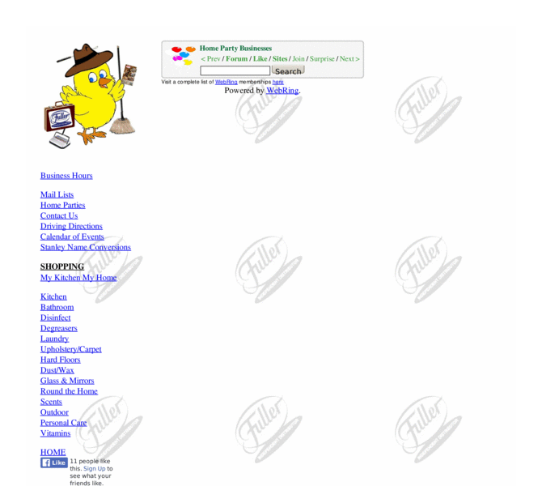

Previewing: the Fuller Brush Chick Previewing: the Fuller Brush Chick 
Use the left/right red arrow controls to navigate through this ring - Click the preview image to visit the member site.

The man at your door is now a woman with a store. Independent distributor serving Lebanon, Berks, Schuylkill, Dauphin, York, & Lancaster counties of PA since 2005. Stop by the store for a quick pick up or order direct!
the Fuller Brush Chick owned by:
 fuller fuller
A member of the original webring since 02/05/2010.
|
|